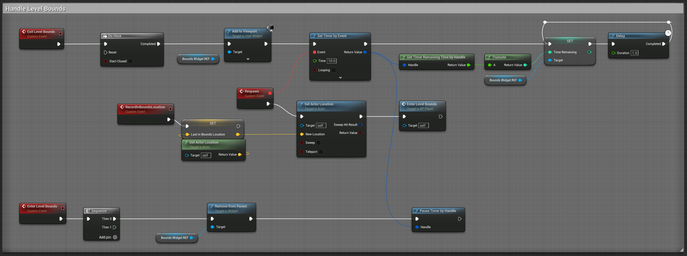
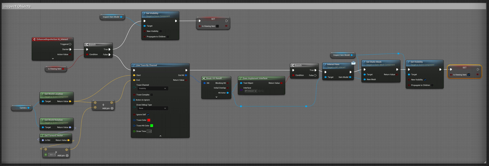
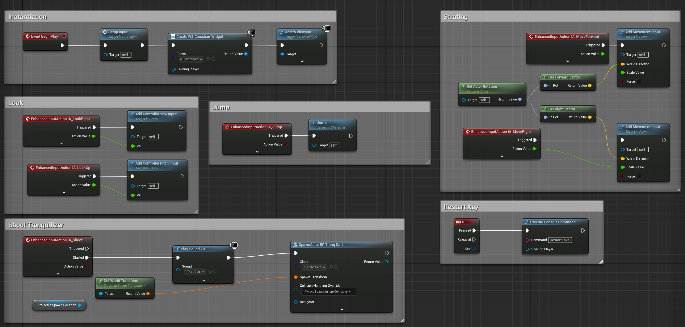

UE5 Level Design
In my senior year at USC I had the opportunity to take a Level Design Workshop in Unreal Engine led by Richard Lemarchand, where I made 3 solo projec3s and one working in a team of 4. We focused on developing our skills creating written documentation and visual design materials for first person levels, making blockmesh in UE5, and iterating on them after playtesting them with our peers. I had a lot of fun inventing and building out these places, and I’m making this post to share my process.
Design Materials
For each level, I created a level flow diagram, multiple 2d layout drafts, and a collection of reference images emulating the feel I was going for. But the process always started by coming up with a place that resonated with me.
Mundanity is a huge source of inspiration for me. Not only does mundanity enhance my favorite narrative moods, like absurdity, liminality, melancholia, and surreality, but also every discovery is extra exciting when contrasted with mundane surroundings. So-called “boring” places are packed with surprise and intrigue when you really dig into them, and this is what I hoped to convey in the two solo projects I did for this workshop: One that takes place at a rest-stop off I-70 East, and the other taking place in an empty office complex in Minneapolis, MN.
For the I-70 Rest Stop level, I started by jotting down the narrative, and created this level flow diagram.

In this level, your desperate search for a bathroom leads to the discovery of a massive cover-up...
Then, I sketched out a few drafts for the layout of the level.

Zeroth draft. Basic layout to match narrative beats.

First draft. Layout basic structures.

Second draft. Add details to create a blueprint for blockout.
The “zeroth” draft is just to get the basics down and make sure the narrative will flow through the space correctly. The first draft is useful for massing and actually creating the architecture of the space, and the second draft cleans everything up and adds all the details necessary to create a good blockout.
My goal with these layout sketches is to create a literal blueprint for my blockout. I want something that I can drop into a plane in Unreal and start placing objects on top of.
Blockout
With my layout sketches in hand, I jumped into UE5 and started building the level in 3D. To make things easier, I imported my layout sketches and put them on a giant plane so I could see where all the basic shapes would go in relation to each other.
With that, massing was easy, and using UE5’s modeling tools I quickly had a basic version of the level ready to play. At this stage, I was okay with abstract environments. I just wanted to get the scale, lines of sight, and basic wayfinding in place. All these things would be much harder to fix if I made a detailed environment from the start, because that would mean more things to move and re-make for each of these big, macro-level changes.
Blockmesh
For me, it’s useful to distinguish blockout from blockmesh: Blockout is an extremely simple first pass with basic shapes. It helps me do massing, set the general layout, and solve big usability problems early on. Blockmesh, on the other hand, is more representational, and solves some of the usability problems from the first round of playtests.

BlockOUT of the starting area of my Minneapolis level.

BlockMESH of the same area of the Minneapolis level.
I made my blockmesh using a combination of Blender and UE5’s modeling mode.
Scripting
I used UE5’s Blueprints to create basic mechanics for these levels.
Level Bounds
Since the I-70 Bathroom Adventure takes place outside, I needed to prevent the player from wondering off and getting lost, so I made invisible level bounds that put a timer on screen, warning the player to return to the path.
Blueprint for the Player's response to exiting and entering level bounds.

The bounds themselves have an inner and outer trigger volume that simply tells the player when it has left or re-entered the playable area. The player Blueprint pops some UI on screen and respawns you at your last inbounds location if you don’t run back in time.
Object Examination
To convey the narrative for I-70 Bathroom Adventure, I made an object inspection mechanic that allows the player to pick up pieces of paper on the ground containing narrative beats.
The Player's Blueprint for inspecting objects.
It works by doing a Line Trace in the direction the player is facing, and if it finds an object implementing BPI_Interactable, it grabs its static mesh and swaps it into an invisible placeholder object right in front of the player camera.
Tranquilizer Darts
For my team project, our level was about a security guard at an amusement park tasked with removing kids from the park if they lingered after closing time. Naturally, the mechanic we came up with for this was the give the player tranq darts to launch at these misbehaving kids.
I opted to make the player’s movement from scratch so I could learn more about movement and input in Unreal. This is the full player class.
The Player's Blueprint for firing tranq darts.
The dart is a Projectile that, on impact, checks if it hit a “Child” and dings to give the player some feedback that they got a hit.